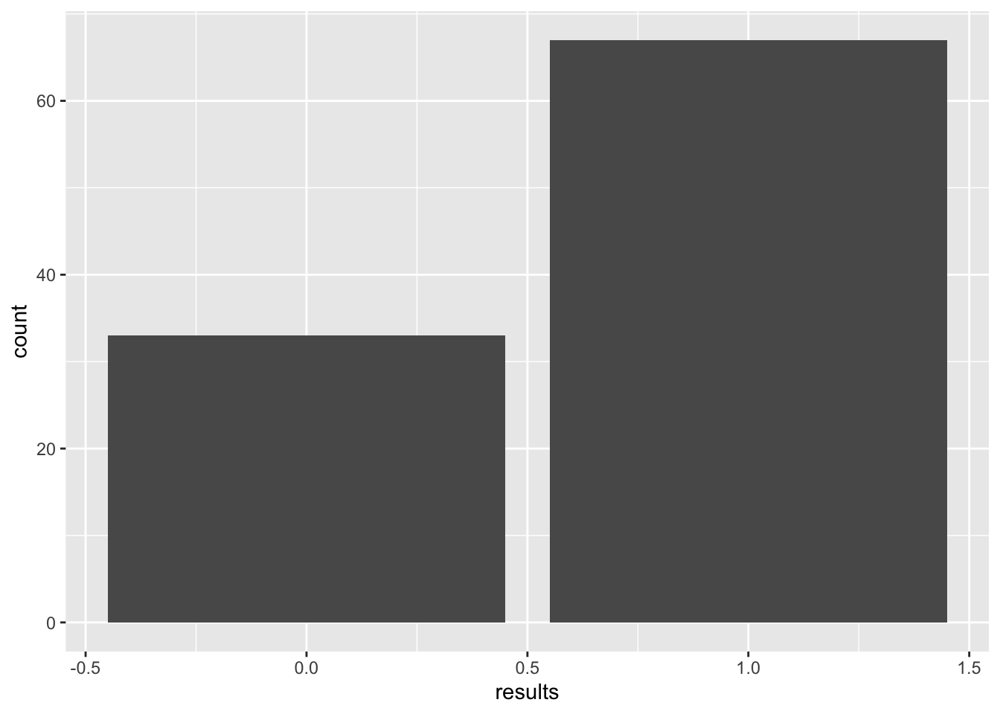
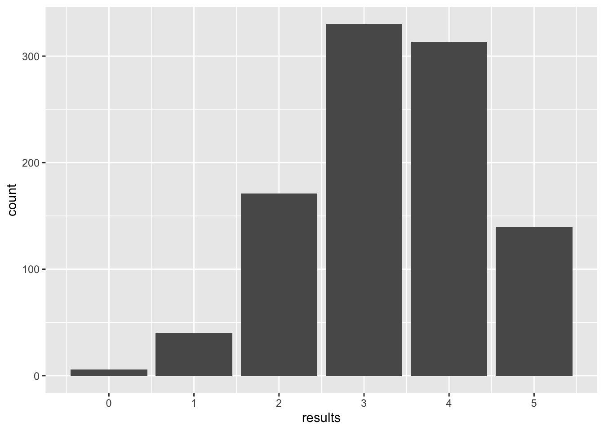
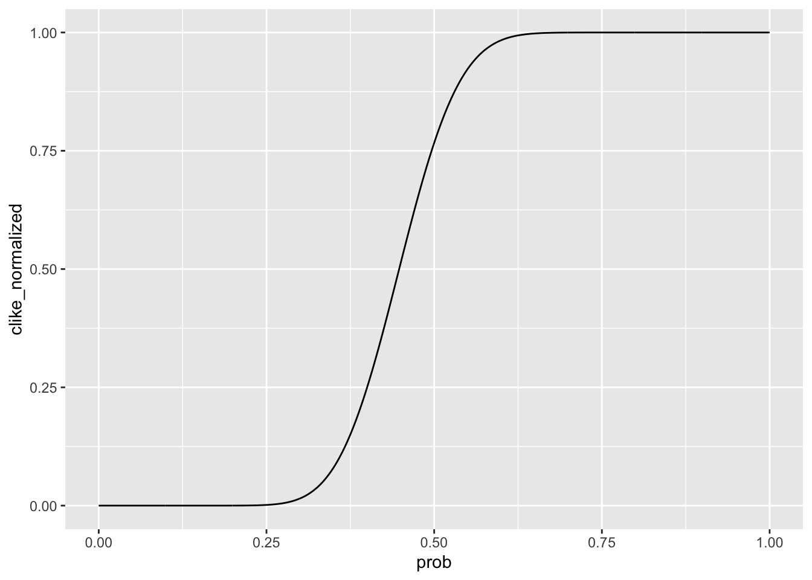

library(tidyverse)HW5_syQiu
Some basic functions to work with binomial distribution:
dbinom(x, size, prob): return the probability of havingxheads if toss a coin forsizetimes with a probability ofprobto have heads. The result is equal tochoose(size, x) * prob^x * (1-prob)^(size - x)pbinom(q, size, prob): return the area (CDF).pbinom(size, size, prob) = 1, not so commonly used…cannot think of a context to use it.rbinom(n, size, prob): randomly generate a vector ofnrandom variables, each of which equal to the number of heads withinsizetrials of coin toss.qbinom(p, size, prob): inverse ofpbinom(), return the number at the point when area under the CDF equal top
5.2.1 Bernoulli Distribution
# Verification of equation 5.1
dbinom(1, 1, 2/3)[1] 0.6666667dbinom(0, 1, 2/3)[1] 0.3333333dbinom(2, 1, 2/3)[1] 0# Verification of equation 5.2
pbinom(-1, 1, 2/3)[1] 0pbinom(0, 1, 2/3)[1] 0.3333333pbinom(1, 1, 2/3)[1] 1pbinom(2, 1, 2/3)[1] 1# rbinom() and plot
bernoulli_sample <- data.frame(
sid = c(1:100),
results = rbinom(100, 1, 2/3)
)
ggplot(bernoulli_sample, aes(results)) +
geom_bar()
5.3.1 Sample space
Possible scenarios by the number of heads:
1 possible way to get 0 \(H\): \((T,T,T,T)\)
4 possible ways to get 1 \(H\): \((H, T, T, T), (T, H, T, T), (T, T, H, T), (T, T, T, H)\)
6 possible ways to get 2 \(H\)s: \((T, T, H, H), (T, H, H, T), (H, H, T, T), (T, H, T, H), (H, T, H, T), (H, T, T, H)\)
4 possible ways to get 3 \(H\)s: \((T, H, H, H), (H, T, H, H), (H, H, T, H), (H, H, H, T)\)
1 possible way to get 4 \(H\)s: \((H, H, H,H)\)
Therefore, the sample space of a total of 16 possible ways is
\[ \Omega=\{(T, T, T, T), (H, T, T, T), (T, H, T, T), (T, T, H, T), \\(T, T, T, H), (T, T, H, H), (T, H, H, T), (H, H, T, T), \\(T, H, T, H), (H, T, H, T), (H, T, T, H), (T, H, H, H), \\(H, T, H, H), (H, H, T, H), (H, H, H, T), (H, H, H, H)\} \]
5.3.2 Probabilities
Denote \(Y()\) as the number of events
\(Y(X=0)=1\)
\(Y(X=1)=4\)
\(Y(X=2)=6\)
\(Y(X=3)=4\)
\(Y(X=4)=1\)
\(Pr(X=2)=\frac{Y(X=1)}{\sum_{i=0}^{4}Y(X=i)}=\frac{6}{1+4+6+4+1}=0.375\)
\(Pr(X<=1)=\frac{Y(X=0)+Y(X=1)}{\sum_{i=0}^{4}Y(X=i)}=\frac{1+4}{1+4+6+4+1}=0.3125\)
dbinom(2, 4, 0.5) # Pr(x = 2)[1] 0.375pbinom(1, 4, 0.5) # Pr(X <= 1)[1] 0.31255.3.3 Size = 5
binom_sample <- data.frame(
results = rbinom(n = 1000, size = 5, prob = 2/3)
)
ggplot(binom_sample, aes(x = results)) +
geom_bar() +
scale_x_continuous(breaks = c(0:5))
mean(binom_sample$results %% 2 == 0) # Prob(X is an even number)[1] 0.49dbinom(x = 2, size = 5, prob = 2/3) + dbinom(x = 4, size = 5, prob = 2/3) # Theoretically[1] 0.49382725.3.5 Revisit
Calculate manually:
There are 6 possible scenarios to get two heads, therefore, the probability of having two heads in four coin tosses when the probability of head is 1/3 is \(Pr(X=2)=6*(\frac{1}{3})^2*(\frac{2}{3})^2=\) 0.2962963
dbinom(2, 4, 1/3) # Pr(x = 2)[1] 0.29629635.3.7 Verification
We can verify this by creating a data frame listing all the probabilities and cumulative probabilities, as well as the computed results by equation manually.
binom_verif <- data.frame(x = c(1:15)) |>
mutate(
func_dbinom = dbinom(x, 15, 2/3),
calc_dbinom = choose(15, x) * (2/3)^x * (1-2/3)^(15-x),
func_pbinom = pbinom(x, 15, 2/3),
calc_pbimom = cumsum(calc_dbinom)
)
binom_verif x func_dbinom calc_dbinom func_pbinom calc_pbimom
1 1 2.090752e-06 2.090752e-06 2.160443e-06 2.090752e-06
2 2 2.927052e-05 2.927052e-05 3.143097e-05 3.136127e-05
3 3 2.536779e-04 2.536779e-04 2.851088e-04 2.850391e-04
4 4 1.522067e-03 1.522067e-03 1.807176e-03 1.807106e-03
5 5 6.697095e-03 6.697095e-03 8.504271e-03 8.504202e-03
6 6 2.232365e-02 2.232365e-02 3.082792e-02 3.082785e-02
7 7 5.740368e-02 5.740368e-02 8.823160e-02 8.823153e-02
8 8 1.148074e-01 1.148074e-01 2.030389e-01 2.030389e-01
9 9 1.785892e-01 1.785892e-01 3.816282e-01 3.816281e-01
10 10 2.143071e-01 2.143071e-01 5.959352e-01 5.959351e-01
11 11 1.948246e-01 1.948246e-01 7.907598e-01 7.907597e-01
12 12 1.298831e-01 1.298831e-01 9.206429e-01 9.206428e-01
13 13 5.994603e-02 5.994603e-02 9.805889e-01 9.805888e-01
14 14 1.712744e-02 1.712744e-02 9.977163e-01 9.977163e-01
15 15 2.283658e-03 2.283658e-03 1.000000e+00 9.999999e-01We can see the results computed by function and by hand are almost the same.
There are very subtle differences between the cumulative results computed by function and by hand, possibly caused by digits issue.
5.4.1 Likelihoods
grid <- tibble(prob = seq(0, 1, by = 0.001))
grid$like <- dbinom(21, 47, grid$prob)
grid <- grid |>
mutate(
clike_raw = cumsum(like),
clike_normalized = clike_raw/sum(like)
)
ggplot(grid, aes(x = prob, y = clike_normalized)) +
geom_line()
1-grid$clike_normalized[grid$prob == 0.588][1] 0.02474252The chances that prob is equal to or greater than 0.588 is 0.025